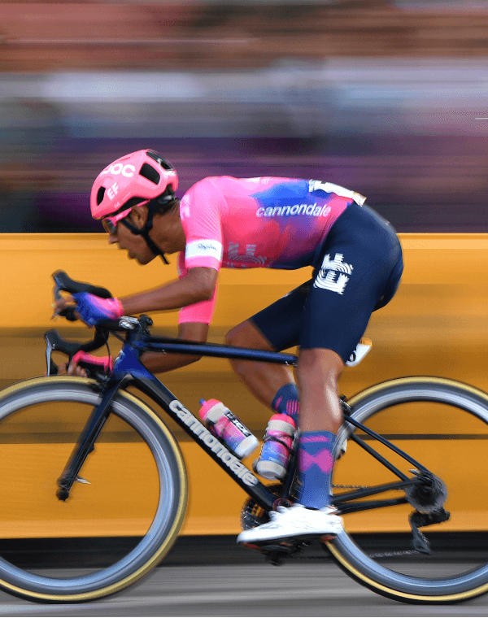
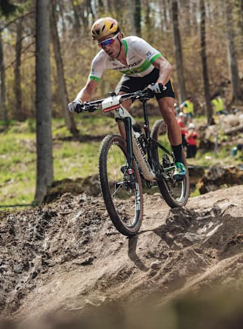

Ciclista praticando em uma estrada O ciclismo de estrada talvez seja uma das modalidades do ciclismo mais praticada, sendo que algumas das competições mais famosas desse esporte em todo o planeta são realizadas nesse estilo.
Os campeonatos de estrada são disputados de maneira individual ou por equipe, sendo que existem dois estilos de competição, o de resistência e o de tempo. No primeiro, os competidores largam todos juntos e vence aquele que concluir o percurso primeiro, sendo que a distância das provas masculinas varia de 150 a 200 km, enquanto as provas femininas têm entre 60 e 100 km.
"Já nas competições contra o tempo, os atletas largam em instantes diferentes, e o vencedor é o que concluir o trajeto total, que é de cerca de 40 km para os homens e 20 km para as mulheres, no menor tempo. O ciclismo de estrada é praticado com as chamadas speeds, bicicletas que têm os pneus bastante finos e que são mais leves que as tradicionais, além de serem desenvolvidas com uma aerodinâmica que favorece o ganho de velocidade e estabilidade nas estradas.

Ciclista montado em sua bike em uma montanha. Praticar mountain bike é uma atividade indicada para quem tem espírito aventureiro, pois essa, entre tantas modalidades do ciclismo, proporciona momentos de muita emoção e manobras arriscadas. O mountain bike é dividido em vários estilos, entre eles:
Cross country
Freeride
Downhill
Trip Trail
Por ser disputado em uma pista de terra com subidas e descidas e, em alguns estilos, com obstáculos, esse tipo de ciclismo proporciona belas imagens e deixa os espectadores dos campeonatos encantados.
No mountain bike, existem competições em que os atletas fazem a largada juntos e o vencedor é aquele que cruza primeiro a linha de chegada, e outras em que cada atleta corre sozinho e a vitória fica com o que realizar em menos tempo o percurso, que é bastante variável segundo cada campeonato.
Reconhecido como uma das modalidades do ciclismo que mais exige habilidade por parte dos atletas, o BMX também proporciona manobras espetaculares.
Esse tipo de ciclismo, que é praticado com bicicletas que têm pneus menores — geralmente, apenas 20 polegadas de diâmetro —, é dividido em dois estilos, BMX Racing (corrida) e BMX Freestyle (manobras).
No primeiro caso, os competidores disputam uma corrida em uma pista circular com diversos obstáculos e o vencedor é aquele que concluir o percurso primeiro. As distâncias percorridas nas competições dessa modalidade são pequenas, variam entre 300 e 400 metros, e os atletas completam o trajeto em cerca de 40 segundos.Com os primeiros registros no início de 1870, o ciclismo de pista surgiu através de atletas que disputavam essa modalidade em locais fechados, que são conhecidos hoje em dia como velódromos.
Mas, somente em 1885 que o primeiro campeonato mundial foi realizado, derivando na inserção dessa modalidade de ciclismo nas olímpiadas de 1886, em Atenas. Desde então, o ciclismo de pista esteve presente em todas as edições das olimpíadas seguintes, exceto em 1912, em Estocolmo. Nesse ano, somente ciclistas voltados às estradas participaram dessa competição.
Das diversas modalidades do ciclismo, essa é muito semelhante ao ciclismo de estrada e moutain bike. O seu nome vem do inglês e a tradução para “Gravel” seria cascalho. Ou seja, o terreno é bem árduo, com diversos obstáculos.
Suas bicicletas precisam estar preparadas para terrenos mais acidentados, em trilhas e asfalto também. Por isso, a bike possui pneus largos e rodas mais altas, garantindo maior velocidades para as competições.